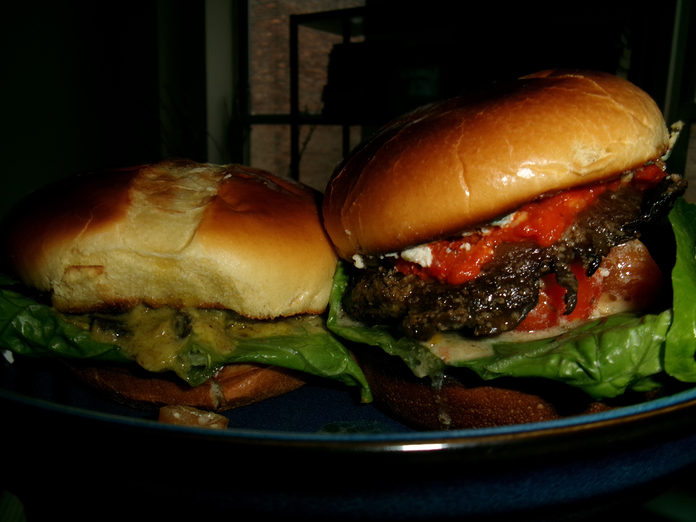
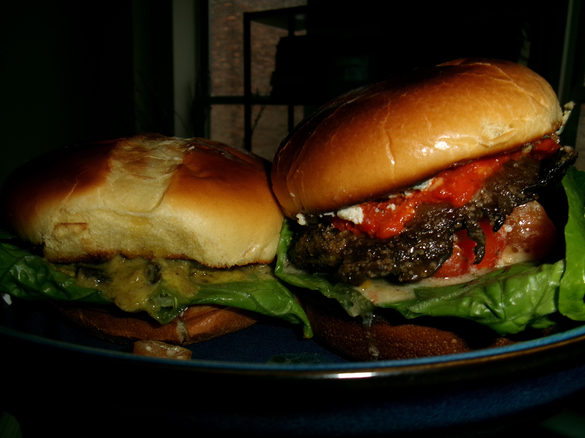

Featured Works

The Women In Male Dominated Streets
April 2025 | MethodologyData from the NYC Department of Records shows the gender disparity in our urban landscape with only 22% of honorarily named streets honoring women.

Health Department Cites Harlem School Cafeterias for "Critical" Violations
November 2024City inspectors find unsanitary cafeteria conditions in almost one-third of Harlem public school buildings. Schools aren't required to tell parents.

The Quiet Crisis of Academic Deplatforming
May 2025 | MethodologyDeplatforming, or censorship by internal or external sources of the accessibility to public events on campus, is alarmingly on the rise.

New York Banned Reservation Resales. Now a Platform Plans to Test the Law With AI
July 2025After a reservation resale platform was shut down by New York’s “Restaurant Reservation Anti-Piracy Act,” its founder plans a comeback with a chatbot.

Can Better Access to Defibrillators Combat Rising EMS Response Times in Harlem?
November 2024As slower responses lead to increased cardiac deaths, advocates urge wider distribution of life-saving devices and educational campaigns to encourage their use.

We Stopped Burning Books - Now We Just Ban Them
February 2025 | MethodologyVisualizing the mass censorship of books in American schools.

Left Behind: The State of Airline Accessibility
March 2025 | MethodologyAnalysing the disability related complaints lodged against U.S commercial airlines, over the past five years.

War & Peas
December 2024A prototype for a classifier that can take multiple menu items as input and categorize whether the food is vegetarian or contains meat, simultaneously providing a veggie score.

Network of Magic in Harry Potter
June 2020 | MethodologyAnalyzed the network of magic within the Harry Potter series using Social Network Analysis and developed an interactive visualization that depicts character-spell relationships.

Youth Perception of Sex-Ed in India
June 2020 | See PosterWhat do the youth of India feel about the need for formal sexual education in classrooms? I analyse the results of a survey I conducted in collaboration with Untaboo, an Indian non-profit, during the 'Bois Lockerroom' harrassment scandal in Delhi schools.

CB 10 Wants to Use New Online Platform to Bridge Gap Between Harlem Residents and Developers
September 2024The land use committee advocates for an innovative project to inform developers of community needs.


 
